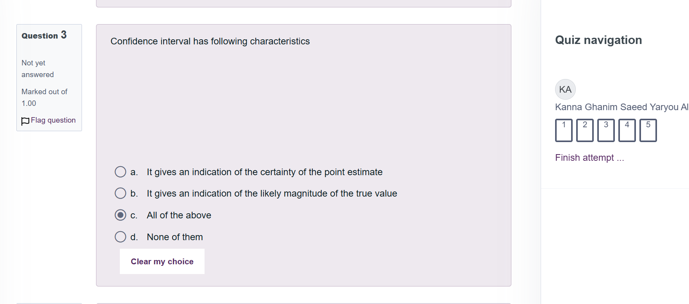
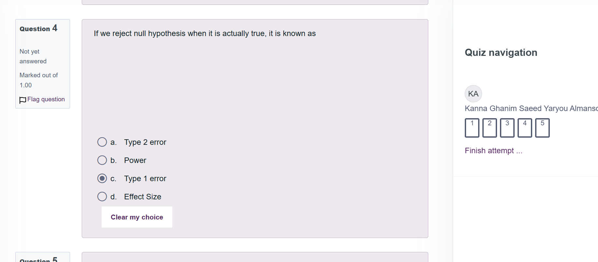
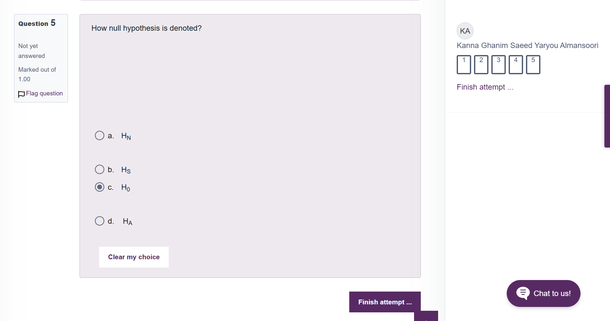

Unit 6: Statistics Quiz
Deadline: End of Unit 6 | Type: Formative | Status: ✓ Complete
Statistics Quiz - Unit 6 Review
Here's the quiz I completed for Unit 6. Below you'll find each question along with the answer I selected and my reasoning for choosing it. The images show the actual quiz interface with my answers marked.
Learning Outcomes
Going through this Unit 6 quiz helped me understand some key statistical concepts. I learned how ANOVA connects to F-statistics and they're basically the same thing. The p-value rule for hypothesis testing became clearer, and I now understand the difference between Type 1 and Type 2 errors better. I also got a better grasp of confidence intervals and how they show both our certainty level and the likely range of the true value. Understanding the proper notation, especially for the null hypothesis (H0), was important too.
Quiz Questions and My Answers
Question 1: What is the other name of the ANOVA test?

My Answer: a. F-Statistics ✓
Why I chose this: I picked F-Statistics because ANOVA is basically just an F-test. When you run an ANOVA, you're calculating an F-value to see if the groups are different. It's named after the statistician Fisher, so that's why it's called F-test or F-statistics.
Question 2: Null hypothesis is rejected when p-value is less than 0.05. This statement is

My Answer: a. True ✓
Why I chose this: Yeah, this is true. It's the basic rule we learned - if your p-value comes out less than 0.05, you reject the null hypothesis. That's what makes something "statistically significant." Pretty straightforward.
Question 3: Confidence interval has following characteristics
My Answer: c. All of the above ✓
Why I chose this: I went with "all of the above" because confidence intervals do both things. They show you how confident you are in your estimate (narrow interval = more confident), and they also give you the range where the true value probably is. Both statements were correct, so the answer had to be "all of the above."
Question 4: If we reject null hypothesis when it is actually true, it is known as
My Answer: c. Type 1 error ✓
Why I chose this: Type 1 error is when you think you found something but you didn't - it's a false alarm. You rejected the null hypothesis thinking there was an effect, but actually there wasn't one. That's different from Type 2 error where you miss a real effect. Easy way to remember: Type 1 = rejecting when you shouldn't have.
Question 5: How null hypothesis is denoted?
My Answer: c. H0 ✓
Why I chose this: The null hypothesis is always written as H0 (H with a zero). That's just the standard way everyone writes it. The zero stands for "no effect" or "no difference," which is what the null hypothesis represents. It's like the default assumption before you test anything.
Key Findings
- ANOVA and F-Statistics: ANOVA (Analysis of Variance) is also known as the F-test or F-statistics, named after statistician Ronald Fisher
- P-value Rule: The standard significance level is 0.05; when p-value < 0.05, we reject the null hypothesis
- Confidence Intervals: Provide both an indication of certainty and the likely magnitude of the true population value
- Type 1 Error: Occurs when we reject a null hypothesis that is actually true (false positive)
- Null Hypothesis Notation: H0 is the standard notation, where the subscript zero represents "no effect"
Reflection
This quiz was helpful for checking whether I actually understand these concepts or just memorized them. The Type 1 error question finally clicked - I used to mix up Type 1 and Type 2 errors, but now I get that Type 1 is rejecting the null when you shouldn't. The confidence interval question also made me realize they show both the range and how certain we are about our estimate. Overall, I feel more solid about hypothesis testing now - I'm understanding what's happening behind the numbers instead of just following steps.